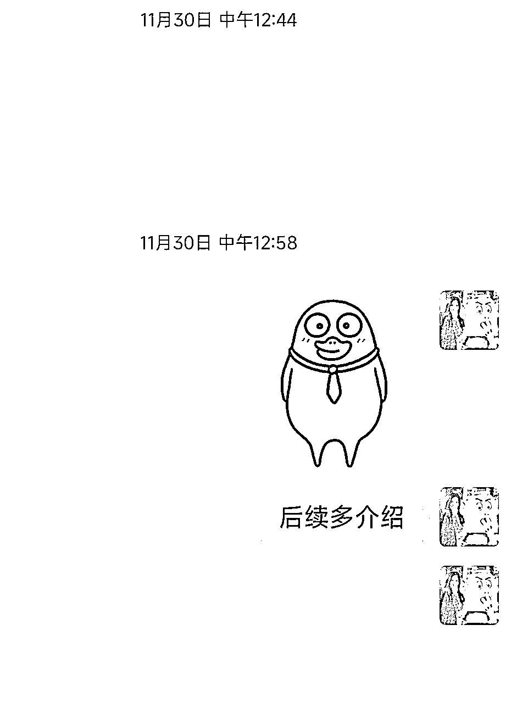

来源：https://yapsq9774vc.feishu.cn/docx/UoUMdVPESoWzc3xjJOTcMq1un9b
大家好，我是佳佳，来自广东广州。
去年4月加入生财，参加了六次航海，这是我第二次参加小红书航海。
从9月29号发布第一条笔记，迄今做了五个号，两个赛道，变现8000+，最近也体会到靠着小红书日赚500的快乐。
感谢航海提供的这次机会，很高兴和大家分享我的做小红书赛道的经历，希望今天的分享能给大家带来一点点收获。
我的分享分为三块：
一、我是如何从0-1的？
二、在实操期间有哪些实用经验？
三、我遇到了哪些卡点以及怎么克服？
说个背景：
小红书资料赛道的玩法很简单，就是通过对标找到一些一些教育行业的资料帖子，像素级模仿，并且引流到微信，让用户付费买资料。
我选择的是成人学历中的成考。
做这个赛道主要是有几点考虑：
① 我在学历提升机构待过三年，自己也有独立在招生，能做答疑
② 成考是10月20号考试，刚好到了资料需求期
③ 这个赛道高客单还不错，如果是个代的话，一个学生能带来1-3k的收入
除了成考外，我也挑战了一个不熟悉的赛道，数据也还不错。
如果小伙伴对于教育赛道都不熟悉也没关系，跟着航海手册走就好。
教育行业除了雅思、考研、留学、法考以外，大部分门槛不高，用户有问题就百度，一般都能找到答案的。
养号和对标我都是跟着小红书虚拟资料的航海手册走的，非常推荐航海手册里找对标的方法，把找到的对标笔记整理在表里。
我当时就是按照模版整理的，找到低粉高赞的帖子，把链接、数据、封面整理好，这样子整理的好处就是：
当搜集一定数量后，你就会发现，原来爆的笔记一定会再爆，这样子要发啥笔记就比较有方向，且行动难度也变小了。
100个同行，100条笔记，这个行动目标yyds。
除此之后，我还做了一个发文规划表，把每天要发的笔记复制下来。
这样子做的好处是：
①每天做小红书的第一时间就知道发啥内容，而不是无规划地去找对标，一般我也会提前两天准备好至少每天一篇笔记
②方便内容重复使用
我的资料库搭建做的很晚，都是帖子爆了之后，我再看是什么资料，然后再去找。
小tips：千万不要在帖子没爆前就纠结资料，这样子很浪费时间。
也不用担心用户发现你提到的资料不一样，没有人研究那么深的。
分享一个找资料的好方式：在微信里搜一搜，就能搜到很全的，然后整理成文档，就可以直接发给客户。
我用的是两个方法：
① 用小号建群，用小号在群里引导加微信
② 把小红书改成微信号，我收藏了一个别人发的笔记：【小红书号就是绿色泡泡】，用户私信时，我分享这个笔记给他。
引流200+，没有违规。
上一期我是没卖资料的，都是来了就免费送。
为什么这样子做呢？
因为我原本也是做高客单的（4千-10万），参加小红书航海的目的就是为了获取一些客户转化为高客单，所以想尝试下能不能直接转化高客单。
不过我还是会建议如果没做过销售，还是先从卖低价的资料做起。
因为，转化技巧也是要练习的，如果连一个9.9、19.9的资料都卖不出，卖高客单就更难了。
但要记住教练说的，做小红书的不要局限于卖资料，而是要想办法让他成为高客单价用户。
而在没有卖资料的情况下，我做的事情也是围绕着如何让他们如何成为高客单用户上，顺带做了个网盘拉新。
最终网盘拉新赚了80多，收两个客户咨询费600，还收了一个学位英语5000元，分成1400+。
网盘分享小tip：上传压缩包非文件夹，这样子他们就必须下载，可以赚下载拉新的费用（我一开始不知道，所以160个人才赚了80块）
成考现在是预收模式，得等学校返款，所以目前我手上的收款截图不多。


第二部分也会分享一些如何做高客单的心得。
这样子可以增加帖子的热度，11月靠着这个技巧爆了两个帖子
这样子后续的用户会跟着做，转粉率、收藏和评论量都上去了，笔记就更容易爆
可以聊聊他想拿资料解决什么问题，目前遇到什么卡点。
比如客单价5000的学位英语客户，刚开始我就了解了他参加成考是想要拿第二学位去考公，学位需要学位英语，但他英语很差，算是刚需，加上他愿意花三年+9000块去拿第二学位，付费能力+意愿度肯定是高的。
这些都是我对他感兴趣，在聊天中获取到的信息。
所以可以设置几个问题，把他变成快捷语，在用户来的之后能了解到有用的消息。
用户来的时候可以问问是什么学校，备考得怎么样，往年录取分数线怎么样，帮他评估下能不能过（百度就可以查往年分数线就好了），这些都是教育领域通用的。

教育行业的客户一定是焦虑+迷茫的，如果你能解决了他的问题或者感觉到专业，他对你的信任度就会快速上升，甚至会自发打红包哈哈。
当你做到，客户觉得你的跟其他销售不一样，甚至比他的招生老师还要好的时候，他就会主动找你请教，找你有没有什么课程。
这个时候，你只需要解决的是供应商的问题，而不是怎么去说服客户信任你。
没做过销售的人会有一个误区，在对接客户的时候，会尝试去转化每个客户。
这个动作本身是没有错的，因为能提升销售能力和磨练心态。
但如果对接了100+以上的客户，精力有限的时候，就要知道如何在沟通中识别出哪些用户值得跟进，重点跟进，而不是把时间平均花在每个客户身上。
不然花费了很多时间却赚不到几个钱，还觉得客户是白嫖的时候，心态会失衡的。
我目前也在练习这个过程，我如何识别：
a.我会通过聊天去了解这个人的背景，报考需求，所在区域，目前工作，判断出这个人的需求，意愿，大致付费能力，我有没有这个区域的产品
b.因为我的资料是免费给的，给完会引导他们去帮我评论。
从这个人的反应里，也能判断出这个人有没有礼貌，愿不愿意听我说，后续转化难度和服务难度大不大。
关于高客单的，还想说一点，高客单转化率本身就不高。如果引流人数只要几十或者一两百，加上缺乏销售技巧，做不出高客单是正常的。
我们做的就是尽可能地引流，对接的用户越多，你开始有了第一单第二单第n单的转化，才会从中找到手感，体会到一单赚几千的快乐。
看到有些伙伴会烦恼产品方怎么找？
可以通过小红书找同行、生财找圈友、甚至微信搜一搜来获取。
我现在有个很靠谱的供应商，是在微信搜一搜找的。
只要想尽办法，都能找到的。
小tips：找那些回复快的，又不会满嘴跑火车的，真诚做交付的供应商，备着2个以上，这样子无论你需要找供应商帮忙，还是有售后服务需要处理的时候，才不需要操心。
小红书航海的教练真的很特别，每次看群里的问答，我发现教练们的回复都很犀利，大致就是不预设困难，别想多，干就完事。
我也是看了他们的回答，行动力蹭蹭上来了。
在这个项目中，我在技巧层面没有任何卡点，毕竟手册太详细了。
我遇到的两个卡点：
成考结束后，我的流量断层下降，发了笔记只有几十个小眼睛。
这也是很多教育行业的正常现象，考研、教资、法考、软考等都会遇到这个问题。
我当时面临的选择有几个：
① 注销账号重选赛道，又或者是换成自考、学位英语方向
② 转为产品营销号，就是发各大院校成考介绍的笔记，有些客户在有需求前会在小红书搜索
③ 养新的号做其他赛道
经过尝试，我把号转成了营销号，同时也做了另外一个赛道。
这样子做的好处是可以极大薅光这个号的价值，
如果你有类似情况，但没精力发笔记或者转化，千万不要直接放弃账号，可以考虑直接卖号或者找人发，有收入的话55分。
我前同事就是靠着一个周更发产品的号，没有任何运营技巧，一个号一年也能招四五个学生。
我的号现在也会有咨询。
这也是为什么我来生财一年半，参加了六期航海，才赚到钱。
起号之初，我会纠结于发什么，没资料怎么办，引流会不会被封号，甚至在十一帖子爆了，我没准备资料，有客户咨询我的时候我都选择已读不回；
期间数据不好的时候也会动摇要不要做；
到了上周，我依旧会在内耗，我有个号每天有这么稳定的咨询，万一私信引流被封了怎么办。
但是，在参加这次航海前，我告诉自己，不能再划水了，因为我的主业业务卡点就是缺流量，小红书是必必必必须做的。
如果我不想尽办法，那我可能就要吃西北风了。
为了让自己有动力，我做了几件事情：
①发朋友圈，让朋友和客户监督我，我这么好面子的人必须对得住自己立的flag
②写了为什么要做小红书的十个好处（可以卖号，可以接代运营，可以卖意向名片，可以复用到其他领域……）
③计算我的预期收益，如果我招一个学生有1-2k，反推出一篇小红书大概能赚100元，目前也做到发了80篇赚了8000+
④找了几个搭子一起卷我，我们都是间歇性打鸡血的人，刚好发作期不一样，可以互相卷
就这么坚持了两个月了，我发现时间是最好的复利。
我越来越得心应手，网感提升了很多，新号的笔记数据也好了很多，也开了第4、5个号。
现在的我，依旧会有恐惧，会有各种担心，但我也发现，只要我在行动，很多问题过段时间就不会困扰我。
现在群里80%的问题，已经不会困扰我了。
所以，脑子没想好的时候，不妨尝试身体先跟上。
最后，感谢生财，感谢教练和志愿者们，做了航海这么好的活动形式，有喂饭级的手册，每次想摆烂看看教练们的分享，直白而扎心，让我又有了动力。
这是我今天的分享，感谢大家，希望可以给大家带来一些收获。